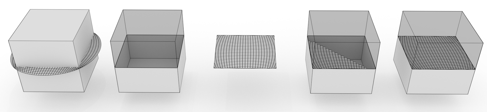

Welcome to the MCUT project¶
Overview¶
MCUT (pronounced ‘emcut’) is a tool for cutting meshes. It is a library for partitioning manifold polygon meshes in order to perform operations like slicing, stenciling, boolean operations and more using a single simple interface.
MCUT partitions shapes directly from input mesh data composed of geometry and connectivity to produce crisp fragments at fine scale. It is the only existing tool allowing cuts on arbitrary planar-polygon meshes with no requirement for triangulation. Moreover, no intermediate conversions like tetrahedral decompositions or signed distance-fields (voxel level-sets) are required to cut shapes.
MCUT also provides stencilling services that calculate the exact cut-outs of the cutting surface that is used to partition a shape. In addition to canonical slicing and hole filling operations (i.e. ‘through’ cuts), it can perform intersection-path queries, constructive solid geometry (CSG) operations and partial (i.e. non-through) cuts.
Why mesh cutting…?¶
Cutting is a fundamental computational geometry problem (AKA “mesh arrangements”) whose solution is useful in a wide set of application domains. The goal of cutting is to partition a given surface mesh, described by its vertices and faces/polygons, into a set of disjoint parts. These resulting parts are typically employed for further model design and/or simulation, such as virtual surgery, video game level design, computer aided design and manufacturing, and fracture simulation.
Now despite existing tools (e.g. CGAL, Cork, Carve or tetrahedral-mesh tools), it is still a challenge to cut manifold surfaces without restrictive assumptions on the input meshes. Moreover, aside from traditional CSG operations, practically all sophisticated modelling software (Maya, Cinema4D, Blender, MeshMixer, ANSYS SpaceClaim etc.) permit only flat planar cuts which severely restricts their modelling and design capabilities in this regard.
What MCUT can do¶
The general design of MCUT is fairly simple to describe but has essential criteria which must be satisfied for practical use. In addition to being reasonably simple to use and robust, MCUT is specifically designed to be a cutting tool supporting the following features:
- Arbitrary manifold meshes: These can be open by having borders/boundaries like a sheet, or closed as in ‘watertight’ (like a sphere).
- Partial cut intersections: Non-through cuts where a sliced object need not be completely partitioned into separate parts.
- Stencilling: Silhouette cut-outs of the cutting surface representing holes/patches corresponding to the holes to be filled after cutting.
- Intersection path queries: Ability to extract edges (and/or vertices) introduced as a result of the cut.
- Booleans: Intrinsic support for traditional CSG operations including union, intersection and difference.
- N-gons: Arbitrary planar-polygon subdivisions which alleviate strict dependence on triangulated meshes.
The remainder of this section provides some examples of what MCUT can do.
A simple example¶

The above image shows a simple example of what MCUT can do. On the left is a cube (the “source mesh”) that is cut by a circular surface (the “cut mesh”), which together comprise the input. On the right is the resulting set of connected components after partitioning the cube. In general, the output of MCUT includes unsealed fragments (mid-left), cut mesh patches (middle), and the sealed fragments (partially or completely) whose holes have been filled with cut mesh polygons that lie on the interior of the source mesh. Sealing can also be done using cut mesh polygons that lie on the exterior of the source mesh.
Arbitrary planar-polygon meshes¶
MCUT is a general tool in that it is particularly suited for incremental cuts by supporting N-gons. Input meshes can have arbitrary planar-polygons (convex or concave), thus avoiding strict restrictions of triangulations which are not unique with subsequent cuts.
An extreme example, which is a result of cutting a source mesh that has concave polygons. The source mesh was a pentagonal frustum with the pentagons (top and bottom faces) made concave (and not parallel to each other). Each pentagon was composed of polygons with several concavities. The whole model was composed of only one volume element (all edges are on the surface). MCUT produces the correct fragments, and does not modify the connectivity except where intersected with the cut mesh.
Most existing tools (which are primarily tailored for CSG operations) are underpinned by the assumption that the meshes considered are always triangulated. Such an assumption can cause to severe degradation of meshes when applying subsequent cuts. Moreover, triangulation is not unique and may thus be found to be suboptimal with the introduction of incremental cuts. In effect, one would be practically forced to undo previous triangulations in order to avoid degeneracies due to newly introduced cuts, thus hindering the incremental nature of a robust cutting algorithm.
If using MCUT in a simulation or visualisation task, one must of-course triangulate for rendering, collision detection etc. but the resulting potentially degenerate triangles are not used in further cutting. The connectivity of the resulting fragments when using MCUT is identical to the (uncut) source mesh except at edges introduced by the cut.
Partial cuts¶
Also, the cut mesh need not partition the source mesh completely to allow partial cut intersections - a feature which further lessens constraints on the relative placement of the inputs.
Input
Result
Stretched
Robustness¶
MCUT is robust, relying on well-tested geometric predicates for resolving intersections. By default, numerical operations are computed exactly up to machine precision (double). The tool will also be configurable to work with arbitrary-precision if so desired, surpassing limitations of machine precision for increased reliability and peace of mind.
Jagged surface cut.
Other examples¶
Refer to the gallery for more examples. Check out the repository on github too.